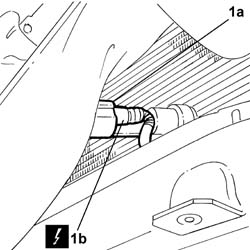
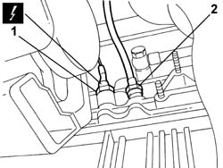
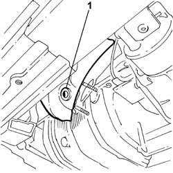
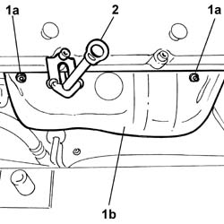
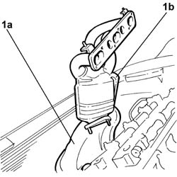

1080B38 LEFT CATALYTIC PRECONVERTER - R.R. or Replace Gasket
- Path
- Procedures > 10 ENGINE > 1080 EMISSION CONTROL SYSTEM > 1080B EXHAUST EMISSION CONTROL SYSTEM > 1080B38 LEFT CATALYTIC PRECONVERTER - R.R. or Replace Gasket
- Kind
- repair procedure (removal / refitting; the operation number is the code)
- Applies to
- engines: 2.0 TB, 2.4 20V, 3.0 V6, 3.2 V6; all production periods
- Interactive page
- https://sloeber94.github.io/elrnDB-lThss/en/#/187467
Applies to: engines: 3.0 V6, 3.2 V6; all production periods
 Removing
Removing
 Refitting
Refitting- Position the vehicle on a lift.
- Make sure that the ignition key is in the OFF position, then disconnect the negative battery lead.
See in Op. 1048A28 vacuum air circuit resonator pipe - r+r
See in Op. 1048A21 AIR INLET HOSE FROM INTAKE TO FILTER - R.R.
See in Op. 1048A23 Cold AIR INTAKE for air filter - R.R.
See in Op. 1048A10 COMPLETE AIR FILTER -R.R.
See in Op. 7055B54 PROTECTION/GUARD under engine - R.R.
See in Op. 1088E10 Radiator cooling FAN - R.R.
- Raise the vehicle
See in Op. 1076B82 EXHAUST PIPE BETWEEN RIGHT PRECONVERTER AND CATALYTIC CONVERTER - R.R.
1. Using the tool (1a) (USAG 875/22 or the equivalent), undo the left front Lambda sensor (1b) and remove it.
 | Description | Connector |
|---|---|---|
1b | Lambda sensor on pre-catalyzer | K015 |

Applies to: engines: 3.0 V6, 3.2 V6; all production periods
1. Undo the nut for the connector (1a) on the crankcase for the oil dipstick pipe (1b).

Applies to: engines: 3.0 V6, 3.2 V6; all production periods
1. Undo the lower bolt fixing the left head exhaust manifold heat shield.

Applies to: engines: 3.0 V6, 3.2 V6; all production periods
- Lower the vehicle
1. Undo the upper two nuts (1a) fixing the left head exhaust manifold heat shield (1b).
2. Undo the bolt fixing the oil dipstick pipe to the left head tappet cover.

Applies to: engines: 3.0 V6, 3.2 V6; all production periods
- Remove the oil dipstick pipe
1. Leaving the heat shield (1a) on the side, undo the nuts fixing the left head precatalyzer (1b), then, moving the two components as appropriate, firstly release the precatalyzer from above followed by the heat shield.

Applies to: engines: 3.0 V6, 3.2 V6; all production periods
Refitting
Removing- Position the precatalyzer and the heat shield, at the same time, then fit the precatalyzer on the head studs and tighten the fixing nuts to the recommended torque.
 | Value - daNm | Fastening | Component | Ø |
|---|---|---|---|---|
. | 2.8 | Nut | CATALYTIC PRE-CONVERTER | M8 |
- Position the oil dipstick pipe
- Tighten the upper nuts fixing the manifold heat shield to the recommended torque.
| Value - daNm | Fastening | Component | Ø |
|---|---|---|---|---|
. | 0,7 | Nut | CATALYTIC PRE-CONVERTER | M6 |
- Fasten the oil dipstick pipe to the tappet cover, tightening the fixing bolt.
| Value - daNm | Fastening | Component | Ø |
|---|---|---|---|---|
. | 0,6 | Bolt | OIL LEVEL DIPSTICK | M7 |
- Tighten the lower bolt fixing the heat shield to the manifold to the recommended torque.
| Value - daNm | Fastening | Component | Ø |
|---|---|---|---|---|
. | 0,7 | bolt | CATALYTIC PRE-CONVERTER | M6 |
- Tighten the nut fixing the oil dipstick pipe to the connector on the cylinder block/crankcase to the recommended torque.
| Value - daNm | Fastening | Component | Ø |
|---|---|---|---|---|
. | 2,5 | Nut | OIL LEVEL DIPSTICK PIPE | M16 X 1.5 |
- Using the tool (1a) (USAG 875/22 or the equivalent), tighten the left front Lambda sensor and remove it.
| Description | Connector |
|---|---|---|
Lambda sensor on pre-catalyzer | K015 |
| Value - daNm | Fastening | Component | Ø |
|---|---|---|---|---|
. | 5.8 | Connector | LAMBDA PROBE (ONE) | M18 X 1.5 |
See in Op. 1076B82 EXHAUST PIPE BETWEEN RIGHT PRECONVERTER AND CATALYTIC CONVERTER - R.R.
- Lower the vehicle
See in Op. 1088E10 Radiator cooling FAN - R.R.
See in Op. 7055B54 PROTECTION/GUARD under engine - R.R.
See in Op. 1048A10 COMPLETE AIR FILTER -R.R.
See in Op. 1048A23 Cold AIR INTAKE for air filter - R.R.
See in Op. 1048A21 AIR INLET HOSE FROM INTAKE TO FILTER - R.R.
See in Op. 1048A28 vacuum air circuit resonator pipe - r+r
- Connect the negative battery lead, then position the cover and close the boot.
- Remove the vehicle from the lift.
Applies to: engines: 2.0 TB, 2.4 20V; all production periods
- Operation not available
Topics linked from this page (7)
- 1048A10 COMPLETE AIR FILTER -R.R.
- 1048A21 AIR INLET HOSE FROM INTAKE TO FILTER - R.R.
- 1048A23 Cold AIR INTAKE for air filter - R.R.
- 1048A28 vacuum air circuit resonator pipe - r+r
- 1076B82 EXHAUST PIPE BETWEEN RIGHT PRECONVERTER AND CATALYTIC CONVERTER - R.R.
- 1088E10 Radiator cooling FAN - R.R.
- 7055B54 PROTECTION/GUARD under engine - R.R.
Topics that link to this page (6)
- 1016D20 LEFT CYLINDER HEAD - R.R. and replace gasket
- 1072C30 EXHAUST MANIFOLD, left side - R.R. and Replace Gasket
- 1076A70 Left catalytic preconverter HEAT SHIELD - R.R.
- 2130A76 Rigid coolant return pipe to engine crankcase from flexible pipe on automatic transmission fluid heat exchanger
- 4130B20 POWER ASSISTED STEERING PUMP - R.R.
- 4130B21 POWER ASSISTED STEERING PUMP - R.R. with interfering belt(s) removed - Includes bleeding air